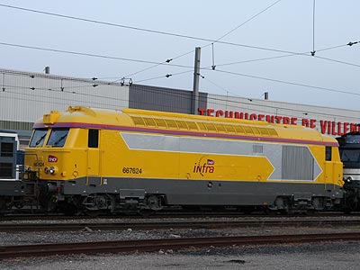

BB 67400
Ultime perfectionnement des séries de BB 67000, les 67400 reprennent pour base les BB 67300 et leur chaine de traction triphasée. Les principales modifications tiennent dans le nouveau bogie Y217 monomoteur à rapport de réduction fixe dont seront dérivés les bogies des BB 15000, BB 7200, BB 22200 et même des BB 26000. Ainsi qu'un alternateur plus simple et de nouveaux moteurs de traction apportant un gain de puissance à la jante malgré un moteur thermique inchangé. Les 67400 se singularisent de leur ainées par une recherche de simplicité (dans un but économique) et une esthétique moderne. Les moustaches en aluminium et le sigle rond laissent la place à un sigle SNCF UIC et des fanaux de fin de convoi. Elles sont aussi remarquées pour leurs cabines unifiées renforcées aux épais montants de pare-brise qui seront appliquées à toutes les BB 67000/BB 67300 au gré de leur révision, adoptant du coup une esthétique très semblable aux BB 67400.
C'est une importante cavalerie de 232 machines qui est construite de 1969 à 1975 dans le but de chasser une fois pour toutes la traction vapeur. La 67632 sera d'ailleurs la dernière avant longtemps puisque la SNCF n'a plus acquis de locomotive Diesel neuve jusqu'à la commande des BB 75000.
Les BB 67400 ont l'honneur de tirer en UM les trains thermiques SNCF les plus difficiles. On les rencontre notamment sur les tracés exigeants des Cévennes, de l'Aubrac, Valence-Briançon ou bien du Ventadour. Les UM tirent également les express Nantes-Bordeaux ou Amiens-Boulogne/mer. Mais, du fait de leur nombre et de leur polyvalence, elles sont répandues sur tout le territoire et assurent tous types de trains. 161 machines sont par ailleurs aptes à la réversibilité avec des RIB, RIO ou RRR. On pourra citer à leur actif l'unique prestation thermique de banlieue au départ de Paris pour la desserte de Provins via Longueville.
Il fut question un temps d'adapter une part de la série au 160 km/h en UM pour remplacer les CC 72000 sur les trains où ces dernières n'étaient pas assez puissantes. Cependant, le temps de réaliser les essais préliminaires, l'électrification de la ligne du Bourbonnais libéra suffisamment de machines pour que l'opération soit jugée inutile.
Les 67400 sont des machines bien conçues qui vieillissent bien. Elles ont su lutter contre les X 72500 et X 73500 livrés en grand nombre et ont bien résisté aux AGC, bénéficiant de l'absence de descendance directe.
Les années 2010 sonnent néanmoins l'heure de la retraite. L'arrivée des BB 75000 provoquent d'importantes radiations de locomotives Fret en 2012. Puis, les Régiolis bimodes privent les 67400 de leurs prestations régionales et, surtout, la déclinaison "Intercités" B 85000 reprend les Express en traction thermique, à commencer par Nantes-Bordeaux.
Sur la partie alpine Valence-Briançon du train de nuit en provenance de Paris, la traction est désormais assurée par des BB 75300 spécialement modifiées pour les trains de voyageurs.En octobre 2018, il ne reste que 106 machines actives.
Quelques données techniques
Constructeur : Brissonneau et Lotz
Chaîne de traction : Alternateur triphasé, redresseur au silicium
moteurs de traction à collecteurs
Motorisation : moteur Diesel SEMT-Pielstick 16 PA 4-185
1 moteur de traction CTS 66-43-4 entièrement suspendu par bogie
Puissance totale : 1765 kW (moteur thermique), 1525 kW à la jante.
Longueur : 17,090 m
Masse : 83,30t
Aptitude à l'UM avec les BB 67300.
Dispositions particulières: les locs 67424, 476, 477 et 544 disposent de moteurs 16 PA 4-200 d'une puissance de 2090 kW.
Machines remarquables de la série
La 67431 est passée en RG en 2002 alors que les premières machines "En Voyage" apparaissaient. Dans la confusion, elle est sortie de l'atelier peinte en gris aluminium attendant un pelliculage qui ne viendrait jamais puisqu'il n'était pas question de peindre ces machines ainsi. La 67431 a conservé donc sa robe grise habillée uniquement de son numéro plus d'un an avant de recevoir les couleurs Multiservice. Les 67400 révisées depuis lors sont toutes sorties en livrée Multiservice phase II (à base de gris orage)...jusqu'à la BB 67540.
La 67540 appartenait à Fret et en portait les couleurs. Lors de sa révision, elle fut mutée à l'activité Ile de France et peinte en livrée "En Voyage". D'abord incomplète, seuls les nez étaient peints en bleu clair et mauve. Le pelliculage fut appliqué plus tard.
Pour plus d'info :
Les BB 67400 sur Trains de France
Fiche technique des BB 67400 de Florent Brisou
L'inventaire des BB 67400 sur Trains du Sud-Ouest
La BB 67574 dotée de ses enjoliveurs à Neussargues (19/09/2003)
La benjamine de la série, BB 67632 à Lille Flandres (19/09/2003)
La BB 567545 Multiservice (Gris foncé 808) à Langogne (27/04/2008)
La BB 567548 Multiservice (Gris orage 844) à Clermont Ferrand (01/03/2003)
La BB 467439 avec une RIB Transilien à Paris Est (03/07/2003)
La BB 167431 gris métallisé à Vaugirard (14/04/2003)

La BB 867540 première machine "en voyage" à Paris Est (02/02/2005)

La BB 667624 Infra à Villeneuve St Georges (24/04/2010)